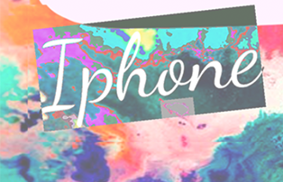

Verhaal #34: iPhone
3.478x gedownload

Om een uur of 12 stapte ik op CS bus 21 uitomdat ik naar de Ipenbare Biliotheek op weg...
Ben je al op vakantie of wil je je graag even voorbereiden op de wereldse reis die je gaat maken? Wij van de NS maken jouw reis completer met allerlei verhalen.
We wensen je een fijne reis en geniet van de verhalen.
Ingelogt als: Iris Tijdhof
Om een uur of 12 stapte ik op CS bus 21 uitomdat ik naar de Ipenbare Biliotheek op weg...
Jij bevindt je een paar kilometer verderop in de buik van je moeder. Ik heb je gisteren gezien. Ik zag...

Ik stap uit de verdomde stinkbus . De mensen krioelen als manier over het stationplein...
Slierten mist zwerven rond mijn benen Net zat ik nog in Bus 21. Het was warm, zweet parelde...
Vlak voordat ik de bus uitstap bedank ik de busschauffeur via de spiegel voor zijn dienst...
Ik had vandaag bus 21 willen nemen naar het Centraal Station om naar de Openbare Biblio-...
Dit gerecht is vrij makkelijk te maken. Ideaal op een dag als je even niet weet wat je met het...
Voor het Centraal Station stap ik lijn 13 uit midden in een plas die zo diep is dat mijn hele schoen...
De bus uit. Mijn zoon tukt in zijn kinderkoets. Eindelijk. Ik loop over het plein. Een gierende wind...
@molovich Schoenen gekocht voor Junior. Op twintig meter afstand van m'n huis #tochgeslaagd...
De buschauffeur port me wakker. Wij zijn de eind-halte, Centraal Station. Ik stap uit en duw...
Het was in de omstreken van een gure februaridag rond het middaguur. Mijn zoon lag in zijn...
Licht van mijn leven. Ik stap vandaag bus 21 uit. Het was op het midden van de dag. En wat...
Mijn voeten en handen heb ik ingezwachteld tegen de kou. Kranten tegen m'n borst. Ik duw...
Het welhaast slaapwekkende geschud van de bus heeft er voor gezorgd dat ik, tegen de tijd...
Vroem. Tuut tuut. Wheeh!! Die! Die! Wheeh! Die! Die! Hjumh-jumh-jum. Zzzzzzz.* zzzzzz.*...
Kijk, daar gaat Max. Dag Max! Hij stapt uit de bus. Wat duwt hij daar voor uit? Jawel, een heuse...
Bus 21, rond het middaguur. Halte Centraal Station. Mijn zoon slaapt in zijn kinderwagen. Ik...